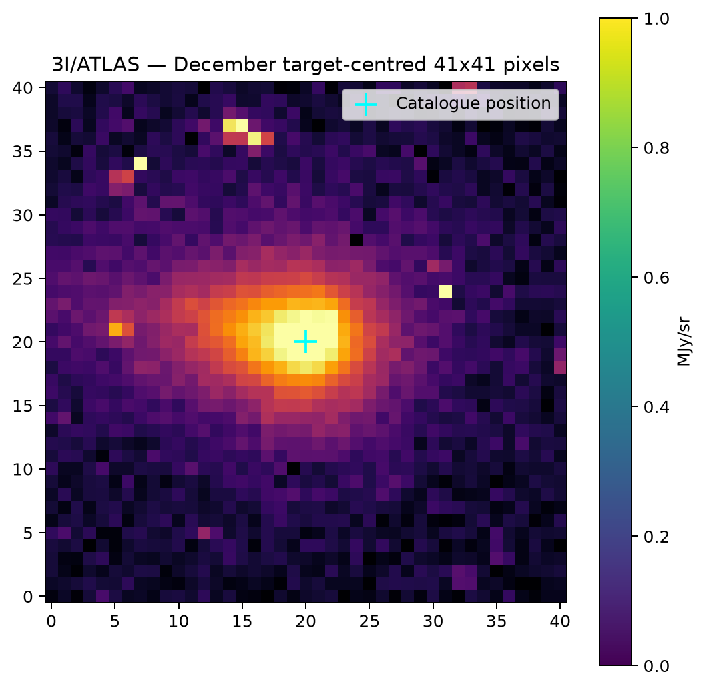

Looking for comet 3I/ATLAS in SPHEREx public survey data
I built this site to inspect public survey images from NASA's SPHEREx space telescope. During its 2025 all-sky survey, SPHEREx passed over the predicted coordinates of interstellar candidate 3I/ATLAS twice: once in August and once in December. I wanted to see whether the comet was visible in the near-infrared detector frames.
The short answer: I do not find a confirmed detection. While the December frame shows a bright spot near the expected position, inspecting the detector bitmasks showed that almost every pixel in the extraction aperture is flagged as a cosmic ray hit or detector persistence.
This is an independent analysis of public SPHEREx Level 2 data from IRSA. It is not an official NASA
or Caltech finding. Both frames studied here were acquired with coarse star-tracker pointing (FINAST = 0).


Figure 1: Target cutouts in Band 3 (1.63 – 2.44 µm). In August, the nearest peak is displaced by 3.4 pixels from the predicted position. In December, the peak lands within 0.38 pixels, but pixel-level flags reveal that the elevated brightness comes from detector artifacts.